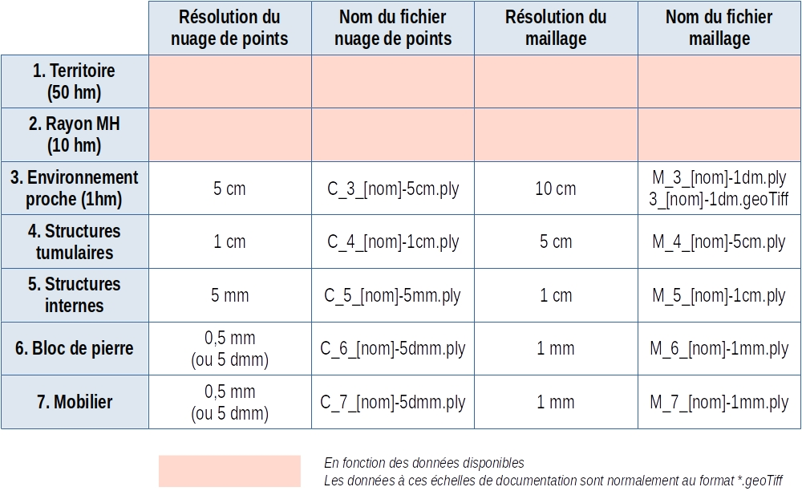

Nous considérons qu'à cette étape, le nuage de points est calculé et consolidé (c'est-à-dire à l'échelle et orienté ; qu'il ne subira plus de transformation).
Les données peuvent par la suite être manipulées selon deux formats : les modèles en 2.5D au format `*.geoTiff` et les modèles 3D (prioritairement au format `*.ply`).
Ces deux formats peuvent être générés avec CloudCompare.
Les modèles 2.5D au format *geoTiff
Ce format est à privilégier pour la documentation des grandes surfaces : le territoire [1], le rayon de protection des Monuments Historiques [2] et éventuellement l'environnement proche [3].
Dans CloudCompare,
- Charger le nuage de points.
- Accéder à l'outil de rasterisation et le paramétrer la sortie.
- ILLUSTRER
Dans Blender, importer le fichier geoTiff avec le plugin BlenderGIS.
Mais il est probable que la documentation du territoire [1] et du rayon de protection des monuments historiques [2] soit plus pertinente avec un logiciel de SIG comme QGis qu'avec Blender.
Les modèles 3D au format *.ply
Ce format est à privilégier pour la documentation des architectures et du mobilier, à savoir : le mobilier [7], le bloc de pierre orné [6], les structures internes [5], les structures tumulaires [4] et éventuellement l'environnement proche [3].
Dans CloudCompare,
- Charger le nuage de points.
- Décimer le nuage de points.
- ILLUSTRER
- Générer un maillage avec l'algorithme Poisson. Cocher l'option scalar field.
- ILLUSTRER
- Enregistrer le maillage.
Optimiser le maillage
Si le modèle 3D est généré dans CloudCompare pour avoir telle résolution, il se trouve que le maillage est légèrement plus dense... Pour augmenter la rapidité des traitements à venir, il est judicieux de l'optimiser.
Dans Meshlab,
- Ouvrir le maillage
- Chercher la fonction `Merge Close Vertices`
- Dans la case `World Unit`, indiquer la résolution cible
- Appliquer
- Enregistrer les maillages sous leur même nom
Synthèse
A titre indicatif, les résolutions habituelles et les noms des fichiers des nuages de points et des maillages sont synthétisés dans le tableau suivant.
Bien entendu, la résolution peut être modulée en fonction des zones d'intérêts.
